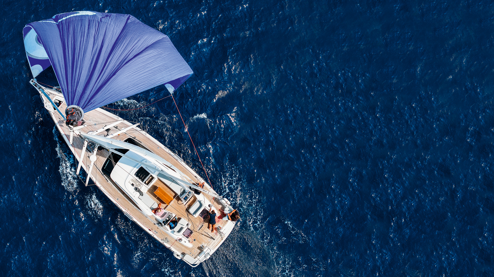
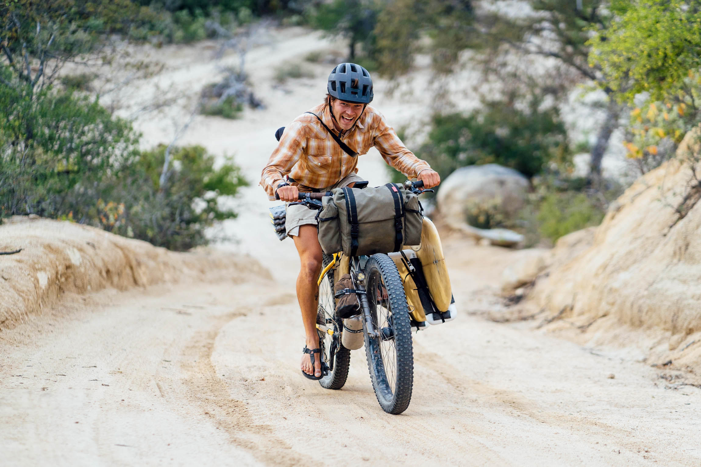

Our Glorious Odyssey

The vastness of the ocean awaits us: our next great challenge.
Fasten your seatbelts (or rather, tighten your roof rack straps)! The SaltRiders, GG and Paco, are about to embark on an odyssey that will redefine the very concept of exploration... or at least, they'll give it a stylish shot. From the beating heart of Europe, these two intrepid (or perhaps, gloriously reckless?) adventurers will unleash their trusty bikes and surfboards on a land-and-sea tour de force, ready to collect exotic cultures and postcard-perfect vistas.
Their travel philosophy? More than a plan, it's a declaration of intent, wide open to the unexpected and pure ingenuity:
- Europe Express, with Champion-like Poise: From Milan, a 'soft' start westward by rail, just to savour the Old Continent before the real chaos begins.
- Epic (and Possibly Ill-Advised) Climbs: A 'brilliant' cycling kick-off from Turin, featuring the Herculean (and let's be honest, utterly bonkers) challenge of conquering a major Alpine pass with surfboards in tow, before (hopefully, with all bones intact) gliding into Grenoble. Who in their right mind would do this? We would! A more conventional overland transfer will then whisk them to San Sebastián, where the call of the open road will once again beckon their wheels.
- Riding the Iberian Atlantic (and the Hills): Cycling like there's no tomorrow from San Sebastián along the wild coasts of Spain and Portugal, on the hunt for epic spots, perfect waves, and possibly, a place to pitch the tent.
- Caribbean Bound: From Las Palmas de Gran Canaria, we'll sneak into the ARC (Atlantic Rally for Cruisers) fleet on November 23, 2025. The mission: to find a passage directly on the pontoons or through unlikely contacts. Ready to cross the Atlantic, sailing towards Saint Lucia, hoping not to end up washing dishes for the entire voyage.
- Pacific Dream: Two Destinies, Same Madness:
- Option A - Ocean Crossing for True (or almost) Sea Dogs: From the Caribbean, a 'quick' sea passage to Panama. From there, the vastness of the Pacific: an adventure of pure sailing towards gems like the Galápagos and the islands of French Polynesia, relying on the kindness of waves, winds, and anyone with a spare bunk.
- Option B - South American Roots and Calves of Steel: A sea passage from the Caribbean to Ecuador will mark the beginning of a LONG cycling journey. Down the Pacific coast of South America, chasing legendary waves, crossing deserts straight out of a western movie, and mountains that will test even the most stoic. An immersion into the continent's vibrant heart all the way to Chile, or until their legs give out.
Forget rigid schedules: this is more a manifesto for travel lived with an indomitable spirit, a toast to the unexpected becoming the norm, and a tribute to every single, quirky, wonderful human connection. Stay tuned, because the best (and most hilariously unpredictable parts) are yet to come!
The Dreamers' Arsenal: Bikes, Surfboards & Tent
The essence of such a unique adventure lies also in the genius of simplicity and a touch of adaptability. To tackle the long coastal stretches, GG and Paco have chosen gravel bikes equipped with dedicated side racks to carry their beloved surfboards. This ingenious system allows them to be as agile as gazelles (though loaded like mules) and fully experience the human-and-board-scaled journey.

The SaltRiders setup: bike, board, and endless horizons.
The rack is lightweight yet sturdy, and if the crosswinds make themselves felt... well, that's part of the adventure. They'll also carry a compact tent, to stop wherever they fancy and sleep under the stars, ready to set off at dawn with their faithful wave-riding companion always by their side, like a somewhat lopsided but indispensable aerodynamic appendage.

Our trusty two-wheeled companion, ready to tackle any type of terrain.